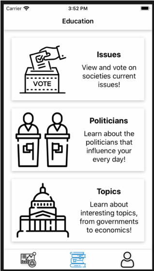
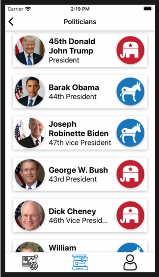
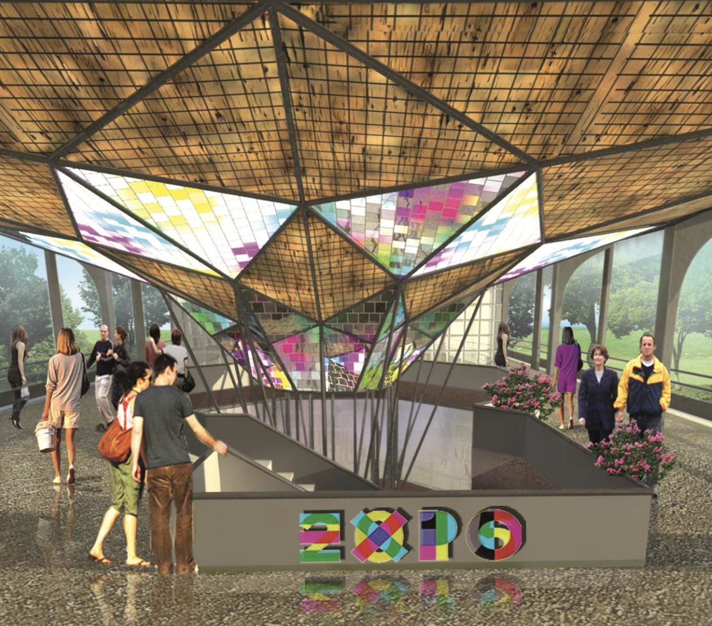
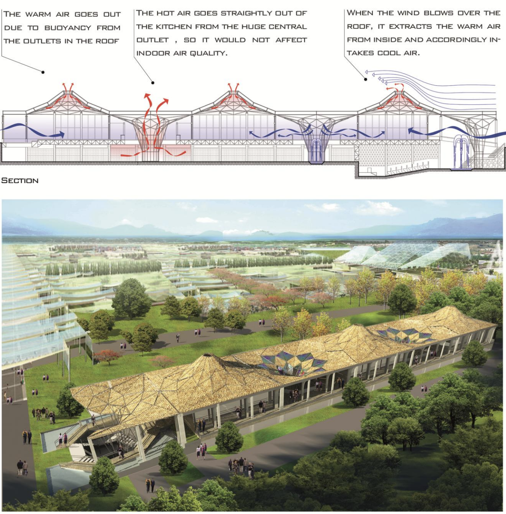
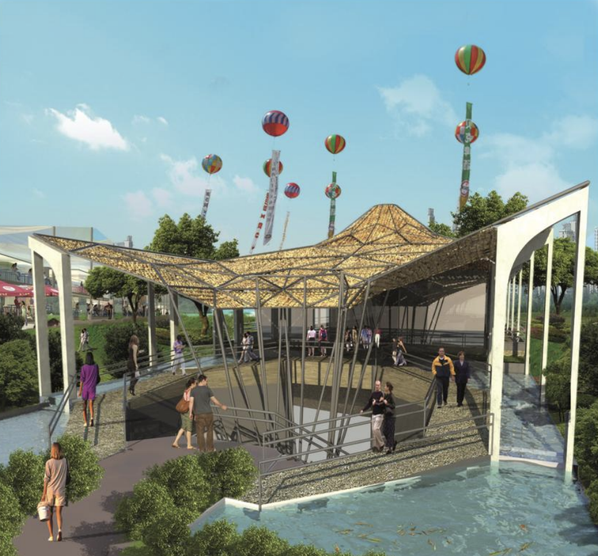
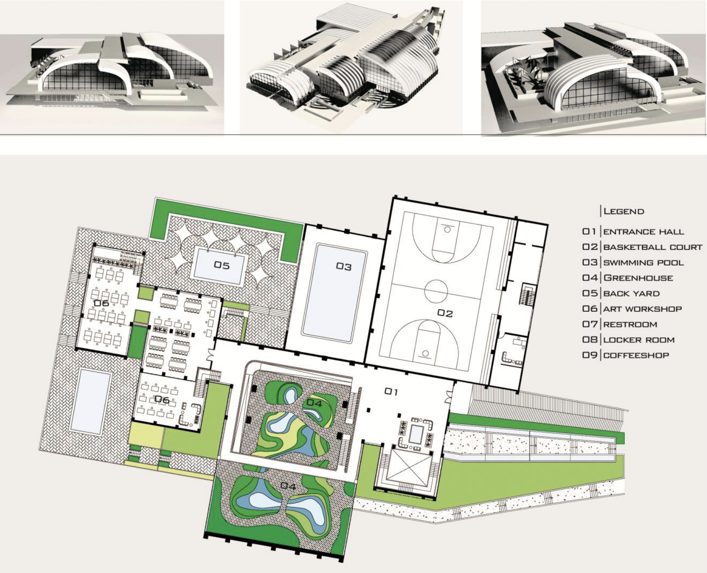
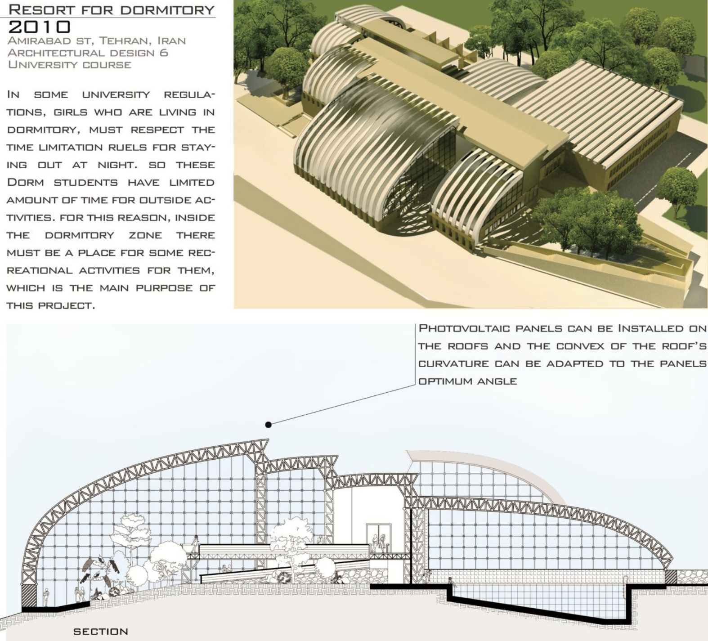
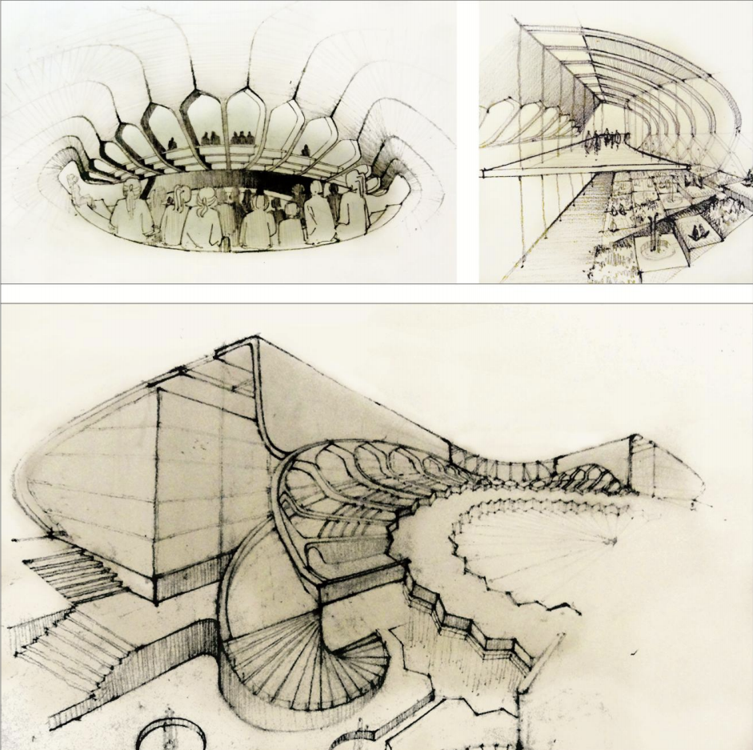
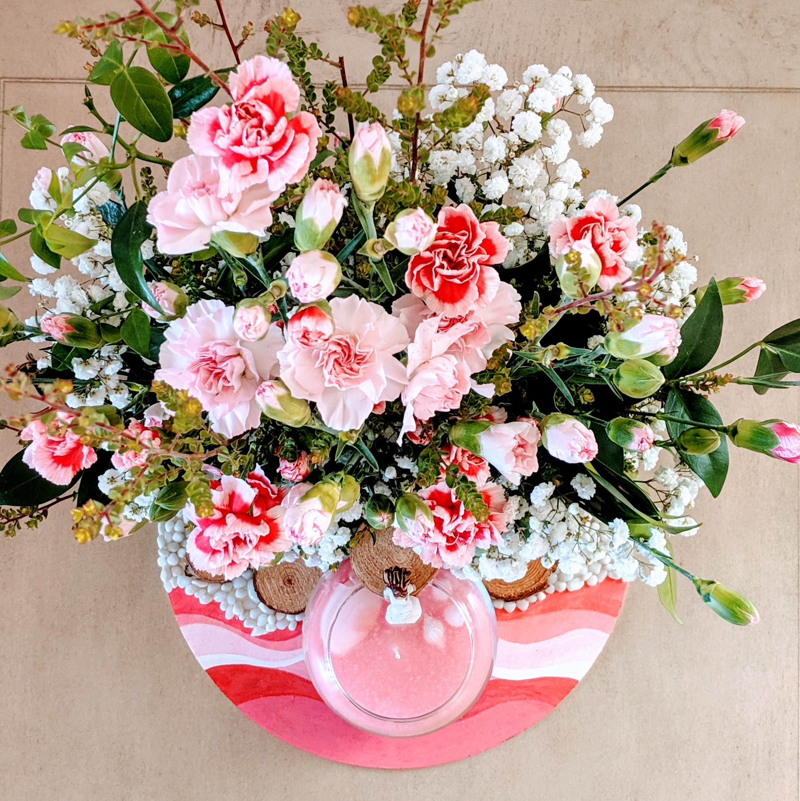
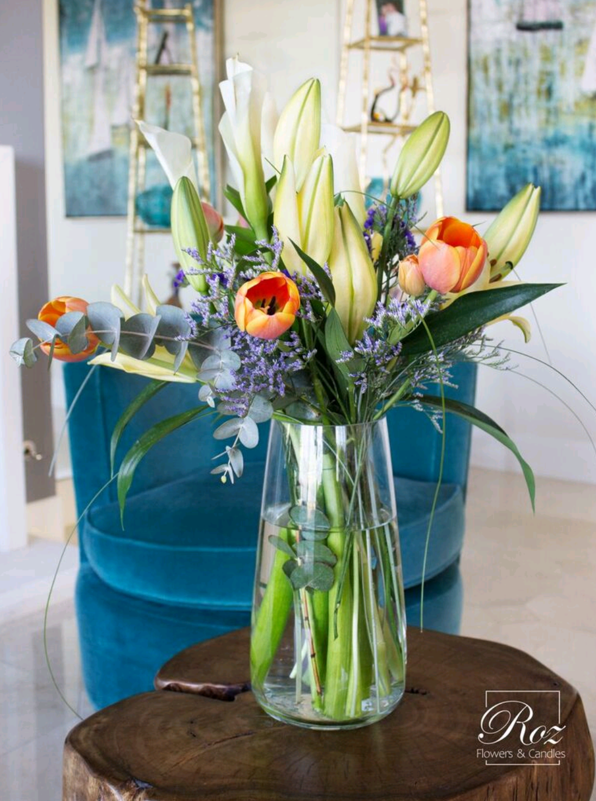

Software Projects
Political Observer
A Cross-platform mobile application
Android & iOS
2020
In a team of three, we developed a mobile applicatiion to better educate people on Political Matters.
The goal was to provide political facts to people, and to collect anonymous data about what people think of different political issues.
We were able to show data analysis of our users' political opinion based on collected demographic information.
For this project I:
• Created backend end-points for variety of data requests, data storage, and retrieval to efficietly collect, store and retrieve data using Node.js.
• Collaborated to develop features for dynamic data collection and visualization using React Native, Node.js, and MongoDB.
• Increased the efficiency of data analysis by implementing a raw data preprocessing mechanism and aggregating the results.
• Implemented Web-Scraping scripts to extract data from public government websites.



UDP Music Streaming App
Based on a peer-to-peer distributed file system
Distributed Systems
2020
In this project, a large database of music file and their information files were stored on a peer-to-peer distributed file system.
User can search musics by title or author on the distributed system, and form their favirte playlist. The streamin is based on UDP.
For this project I implemented all general features and:
• Implemented a peer-to-peer Distributed File System over Chord distributed Hash table in Java using Gson and java threads.
• Implemented Remote Procedure Calls to retrieve music stream and JSON data files using UDP protocol and Java.net library.
World Charities Web Application
A media platform for charities and donors to connect
Web Application
2019
In a team of three, we created a web-app for charities and donors to connect.
The goal was to create one place where users can find variety of charities helping different categories of people in need.
We created a forum for charities, donors, and volunteers to connect and learn more about eah other.
In addition to general backend and frontend features of the app, I:
• Made the app more user friendly by creating a search charity feature by location and subject for users.
• Improved the forum functionality by adding the capability of uploading file and images and filtering messages by images subjects using Google Vsion API.
• Created two separate templates for users and charities addressing different needs of each group.
• Created a Map feature for users to find charities near them using Google Map API.
NFL Football Tour APP
A travel planning app based on Graph Data Structure
Desktop App
2017
The goal of this application is to provide travel plan for users who want to visit different NFL stadiums during football season.
The app is created using Qt GUI, CSS, and C++ language. Other than implementing general features of the app in a team of three, I:
• Implemented the Map of NFL Stadiums in an adjacency list Graph structure using C++
• Improved variety of path finding algorithms for the users to plan their trip in the most effiecnt way.
• Created different features to find the desired touring routes using algorithms such as Dijkstra’s, DFS, BFS, and MST on Graph.
• Created a database to hold user records and retrieve stadium information using MySQL and MVC design pattern.








